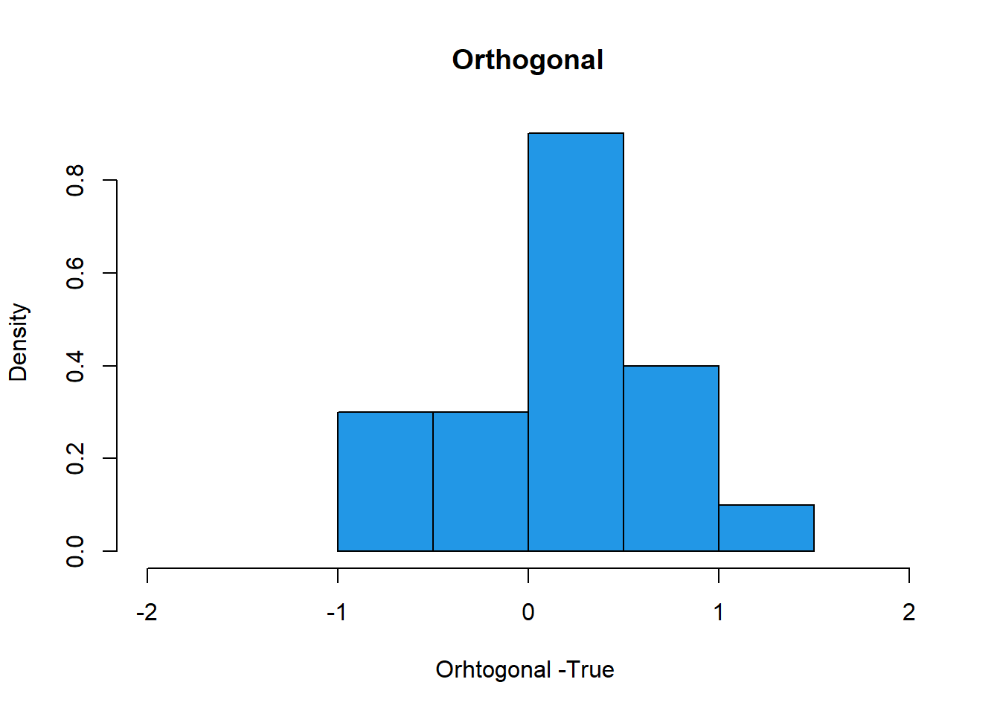

Chapter 5 Simulation Design
5.1 Example 1
R code
library(hdm)
set.seed(1)
B= 20 # trials
Naive = rep(0, B)
Orthogonal = rep(0, B)
Python code
import hdmpy
import numpy as np
import random
import statsmodels.api as sm
import matplotlib.pyplot as plt
import numpy as np
from matplotlib import colors
# Set seed
np.random.seed(0)
B = 20
Naive = np.zeros( B )
Orthogonal = np.zeros( B )R code
for (i in 1:B){
n=100
p= 100
beta = 1/(1:p)^2
gamma =1/(1:p)^2
X=matrix(rnorm(n*p), n, p)
D= X%*%gamma + rnorm(n)/4
Y = D+ X%*%beta + rnorm(n)
# single selection method
SX.IDs = which(rlasso(Y~ D+X)$coef[-c(1,2)] !=0) #select covariates by Lasso
if (sum(SX.IDs)==0) {Naive[i] = lm(Y~ D)$coef[2]}
if (sum(SX.IDs)>0) {Naive[i] = lm(Y~ D + X[,SX.IDs])$coef[2]}
#partialling out
resY = rlasso(Y~ X, Post=F)$res
resD = rlasso(D~ X, Post=F)$res
Orthogonal[i]= lm(resY ~ resD)$coef[2]
}
Python code
for i in range( 0, B ):
n = 100
p = 100
beta = ( 1 / (np.arange( 1, p + 1 ) ** 2 ) ).reshape( p , 1 )
gamma = ( 1 / (np.arange( 1, p + 1 ) ** 2 ) ).reshape( p , 1 )
mean = 0
sd = 1
X = np.random.normal( mean , sd, n * p ).reshape( n, p )
D = ( X @ gamma ) + np.random.normal( mean , sd, n ).reshape( n, 1 )/4 # We reshape because in r when we sum a vecto with a matrix it sum by column
# DGP
Y = D + ( X @ beta ) + np.random.normal( mean , sd, n ).reshape( n, 1 )
# single selection method
r_lasso_estimation = hdmpy.rlasso( np.concatenate( ( D , X ) , axis = 1 ) , Y , post = True ) # Regress main equation by lasso
coef_array = r_lasso_estimation.est[ 'coefficients' ].iloc[ 2:, :].to_numpy() # Get "X" coefficients
SX_IDs = np.where( coef_array != 0 )[0]
# In case all X coefficients are zero, then regress Y on D
if sum(SX_IDs) == 0 :
Naive[ i ] = sm.OLS( Y , sm.add_constant(D) ).fit().summary2().tables[1].round(3).iloc[ 1, 0 ]
# Otherwise, then regress Y on X and D (but only in the selected coefficients)
elif sum( SX_IDs ) > 0 :
X_D = np.concatenate( ( D, X[:, SX_IDs ] ) , axis = 1 )
Naive[ i ] = sm.OLS( Y , sm.add_constant( X_D ) ).fit().summary2().tables[1].round(3).iloc[ 1, 0]
# In both cases we save D coefficient
# Regress residuals.
resY = hdmpy.rlasso( X , Y , post = False ).est[ 'residuals' ]
resD = hdmpy.rlasso( X , D , post = False ).est[ 'residuals' ]
Orthogonal[ i ] = sm.OLS( resY , sm.add_constant( resD ) ).fit().summary2().tables[1].round(3).iloc[ 1, 0]R code
hist(Orthogonal-1,col=4, freq=F, xlim= c(-2, 2), xlab= "Orhtogonal -True ", main="Orthogonal")
hist(Naive-1, col=2, freq=F, xlim= c(-2,2), xlab= "Naive- True", main = "Naive")
Python code
Orto_breaks = [-1.2, -1, -0.8, -0.6, -0.4, -0.2, 0, 0.2, 0.4, 0.6, 0.8, 1, 1.2, 1.4, 1.6, 1.8, 2]
Naive_breaks = [-0.6, -0.4, -0.2, 0, 0.2, 0.4, 0.6, 0.8, 1, 1.2]
fig, axs = plt.subplots(1, 2, sharex= True, tight_layout=True)
# We can set the number of bins with the `bins` kwarg
axs[0].hist( Orthogonal - 1 , range = (-2, 2), density = True , bins = Orto_breaks )## (array([0. , 0. , 0. , 0. , 0.75, 0.25, 0.5 , 1.5 , 1. , 0.5 , 0.25,
## 0.25, 0. , 0. , 0. , 0. ]), array([-1.2, -1. , -0.8, -0.6, -0.4, -0.2, 0. , 0.2, 0.4, 0.6, 0.8,
## 1. , 1.2, 1.4, 1.6, 1.8, 2. ]), <a list of 16 Patch objects>)axs[1].hist( Naive - 1, range = (-2, 2), density = True , bins = Naive_breaks )## (array([0. , 0. , 0. , 0. , 0. , 0. , 0.5 , 2.75, 1.75]), array([-0.6, -0.4, -0.2, 0. , 0.2, 0.4, 0.6, 0.8, 1. , 1.2]), <a list of 9 Patch objects>)axs[0].title.set_text('Orthogonal')
axs[1].title.set_text('Naive')
axs[0].set_xlabel( 'Orhtogonal - True' )
axs[1].set_xlabel( 'Naive - True' )
5.2 Example 2
R code
library(hdm)
set.seed(1)
B= 20 # trials
Naive = rep(0, B)
Orthogonal = rep(0, B)
for (i in 1:B){
n=100
p= 100
beta = 1/(1:p)^2
gamma =1/(1:p)^2
X=matrix(rnorm(n*p), n, p)
D= X%*%gamma + rnorm(n)/4
Y = D+ X%*%beta + rnorm(n)
# single selection method
SX.IDs = which(rlasso(Y~ D+X)$coef[-c(1,2)] !=0) #select covariates by Lasso
if (sum(SX.IDs)==0) {Naive[i] = lm(Y~ D)$coef[2]}
if (sum(SX.IDs)>0) {Naive[i] = lm(Y~ D + X[,SX.IDs])$coef[2]}
#partialling out
resY = rlasso(Y~ X, Post=T)$res
resD = rlasso(D~ X, Post=T)$res
Orthogonal[i]= lm(resY ~ resD)$coef[2]
}
Python code
# Set seed
# Set seed
np.random.seed(0)
B = 20
Naive = np.zeros( B )
Orthogonal = np.zeros( B )
for i in range( 0, B ):
n = 100
p = 100
beta = ( 1 / (np.arange( 1, p + 1 ) ** 2 ) ).reshape( p , 1 )
gamma = ( 1 / (np.arange( 1, p + 1 ) ** 2 ) ).reshape( p , 1 )
mean = 0
sd = 1
X = np.random.normal( mean , sd, n * p ).reshape( n, p )
D = ( X @ gamma ) + np.random.normal( mean , sd, n ).reshape( n, 1 )/4 # We reshape because in r when we sum a vecto with a matrix it sum by column
Y = D + ( X @ beta ) + np.random.normal( mean , sd, n ).reshape( n, 1 )
# single selectin method
r_lasso_estimation = hdmpy.rlasso( np.concatenate( ( D , X ) , axis = 1 ) , Y , post = True )
coef_array = r_lasso_estimation.est[ 'coefficients' ].iloc[ 2:, :].to_numpy()
SX_IDs = np.where( coef_array != 0 )[0]
if sum(SX_IDs) == 0 :
Naive[ 0 ] = sm.OLS( Y , sm.add_constant(D) ).fit().summary2().tables[1].round(3).iloc[ 1, 0 ]
elif sum( SX_IDs ) > 0 :
X_D = np.concatenate( ( D, X[:, SX_IDs ] ) , axis = 1 )
Naive[ i ] = sm.OLS( Y , sm.add_constant( X_D ) ).fit().summary2().tables[1].round(3).iloc[ 1, 0]
resY = hdmpy.rlasso( X , Y , post = True ).est[ 'residuals' ]
resD = hdmpy.rlasso( X , D , post = True ).est[ 'residuals' ]
Orthogonal[ i ] = sm.OLS( resY , sm.add_constant( resD ) ).fit().summary2().tables[1].round(3).iloc[ 1, 0]R code
hist(Orthogonal-1,col=4, freq=F, xlim= c(-2, 2), xlab= "Orhtogonal -True ", main="Orthogonal")
hist(Naive-1, col=2, freq=F, xlim= c(-2,2), xlab= "Naive- True", main = "Naive")
Python code
fig, axs = plt.subplots(1, 2, sharex= True, tight_layout=True)
# We can set the number of bins with the `bins` kwarg
axs[0].hist( Orthogonal - 1 , range = (-2, 2), density = True , bins = Orto_breaks )## (array([0. , 0. , 0. , 0.75, 0.5 , 1.25, 1. , 0.5 , 0.5 , 0.25, 0.25,
## 0. , 0. , 0. , 0. , 0. ]), array([-1.2, -1. , -0.8, -0.6, -0.4, -0.2, 0. , 0.2, 0.4, 0.6, 0.8,
## 1. , 1.2, 1.4, 1.6, 1.8, 2. ]), <a list of 16 Patch objects>)axs[1].hist( Naive - 1, range = (-2, 2), density = True , bins = Naive_breaks )## (array([0., 0., 0., 0., 0., 0., 0., 0., 5.]), array([-0.6, -0.4, -0.2, 0. , 0.2, 0.4, 0.6, 0.8, 1. , 1.2]), <a list of 9 Patch objects>)axs[0].title.set_text('Orthogonal')
axs[1].title.set_text('Naive')
axs[0].set_xlabel( 'Orhtogonal - True' )
axs[1].set_xlabel( 'Naive - True' )